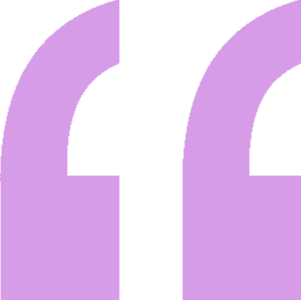
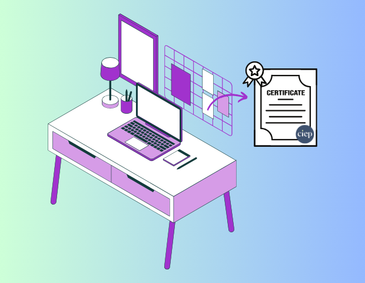

Hi, I’m Emma, and I’m a freelance proofreader and copyeditor, using my keen eye for detail to make a positive impact in people’s lives. CVs and cover letters are my speciality, but I am very flexible and will gladly sink my teeth into a wide range of texts. I channel my lifelong perfectionism and love for language, as well as my professional training, into helping others with their work. I am an entry-level member of the Chartered Institute of Editing and Proofreading and engage in continuous professional development.
If you use social media at all, you will have come across a post containing a spelling or grammatical error. Often the comment section will be filled with helpful corrections and snarky remarks, and too frequently the point of the post will have been missed. Or perhaps you are the one who notices these small details, and you pick up on them everywhere in the real and digital world. Whether or not your text has a comment section for the grammar police to occupy, these errors are distracting and the last thing you want is for your readers to notice them. However, not everyone can or wants to reread their text and scan it word by word. Perhaps you are busy, struggle to concentrate, do not have a grasp on the technicalities of spelling and grammar, or simply need a fresh pair of eyes. Do not worry, that is exactly what a proofreader is for!

Emma really elevated the text I was working on, provided great suggestions and was very responsive and professional during our collaboration. She is my go-to contact for any text-editing or proofreading tasks.
I am extremely satisfied with the service and results. Emma is highly professional and thorough. She not only corrected grammatical errors but also offered valuable insights into optimizing the content and structure. Above all that, the attention to detail was very impressive. I highly recommend this service to anyone looking to elevate the quality of their resume! Great work and thanks again!
Second time working with her! Emma proofread my personal statement and gave me lots of helpful advice. She is so kind and encouraging! I was nervous and anxious but she gave me a lot of comfort and made me feel much better. I'm grateful for this.
